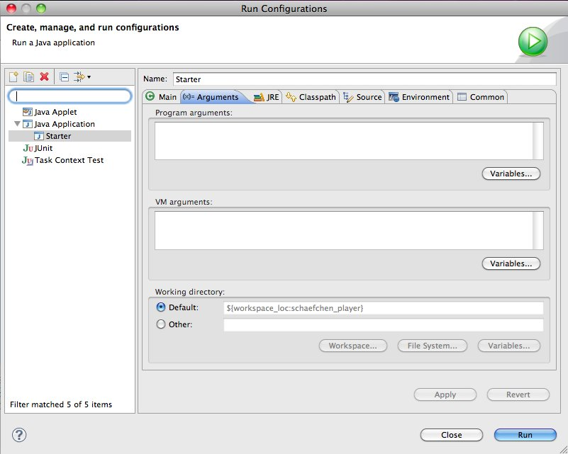

Ziel dieser Dokumentation ist es, alle Informationen über die Software-Challenge an einer Stelle zu bündeln. Hier können sich Lehrer und Kursleiter über den Zweck der Software-Challenge informieren. Für die teilnehmenden Teams ist hier alles dokumentiert, was für den Ablauf des Wettbewerbes benötigt wird.
Wir freuen uns über sämtliche Verbesserungsvorschläge. Die Dokumentation kann direkt auf GitHub editiert werden, einzige Voraussetzung ist eine kostenlose Registrierung bei GitHub. Ist man angemeldet, kann man ein Dokument auswählen (ein guter Startpunkt ist die Datei index.adoc welche Verweise auf alle Sektionen der Dokumentation enthält) und dann auf den Stift oben rechts klicken. Alternativ auch gern eine E-Mail an svk@informatik.uni-kiel.de.
Die Software Challenge
Die Software-Challenge ist ein Schulprojekt, das durch das Institut für Informatik der CAU Kiel veranstaltet wird und das durch zahlreiche Unternehmen, die Prof. Dr. Werner Petersen-Stiftung sowie das Ministerium für Wissenschaft, Wirtschaft und Verkehr des Landes Schleswig-Holstein finanziert wird. In Zusammenarbeit mit den Gymnasien und Gesamtschulen, dem Institut für Informatik sowie den Firmen soll in diesem Projekt der Informatik-Unterricht in praxisbezogener Weise mitgestaltet und dadurch aufgewertet werden. Gegenstand der Software-Challenge ist ein Programmierwettbewerb, der während des gesamten Schuljahres läuft, und der den Schülerinnen und Schülern die Möglichkeit bietet, mit Spaß und Spannung sowie mit kompetenter Begleitung in die Welt der Informatik einzusteigen. Am Ende der Entwicklungsphase schickt jedes Team (Kurs oder AG) einen selbst programmierten Computerspieler für das Spiel in den Wettkampf. Dieser Wettkampf besteht zunächst aus einer kompletten Meisterschaft (jeder gegen jeden) und anschließend aus einem Finale der 8 führenden Teams (Final Eight). Als Preise winken neben zahlreichen Sachpreisen auch Stipendien für die besten Schülerinnen und Schüler. In jeder Phase des Projekts wird in der Presse und im Radio über den jeweils aktuellen Stand berichtet.
Teilnahmebedingungen und Registrierung
Teilnahmeberechtigt sind alle zur Hochschulreife führenden Schulen der Bundesrepublik Deutschland. Jede Schule kann sich dabei mit mehreren Kursen oder AGs (höchstens 3 Teams) anmelden. Jedes Team soll dabei aus mindestens 3 SchülerInnen und einer betreuenden Lehrkraft bestehen. Jeder Kurs bzw. jede AG darf nur ein Team anmelden. Dabei kann es in der Anfangsphase durchaus Sinn machen, intern in einem Team mehrere Gruppen zu bilden, um z.B. unterschiedliche Strategien zu testen und Computerspieler zu entwickeln. Spätestens zu Beginn der Wettkampfphase muss sich das Team jedoch auf einen Computerspieler einigen, der dann in den Wettkampf geschickt und dann eventuell noch gemeinsam weiterentwickelt wird. In begründeten Einzelfällen kann die Wettkampfleitung Ausnahmen von den zuvor genannten Regeln zulassen.
Zur Zeit nehmen pro Schuljahr etwa 100 Teams bundesweit an der Software-Challenge teil. Es werden dabei neben zahlreichen Sachpreisen auch etwa 100 Stipendien (6 Monate je 300 Euro) an die besten 100 Schülerinnen und Schüler vergeben.
Das Anmeldeverfahren sieht etwa wie folgt aus. Genaue Termine des aktuellen Zeitraumes finden sich auf der Website unter Termine.
Ab April können interessierte SchulleiterInnen, Lehrkräfte und SchülerInnen ihre Schulen und Teams für die Teilnahme an der Software-Challenge unverbindlich anmelden. Diese Interessenten werden dann über wichtige Termine und andere relevanten Dinge informiert.
Gegen Ende der Anmeldungsphase werden wir dann mit den registrierten Interessenten in Verbindung treten. Dann soll eine (relativ) verbindliche Anmeldung erfolgen, so dass wir darauf aufbauend unsere Ressourcen planen können.
Die endgültige Anmeldung soll dann zu Beginn des Schuljahres erfolgen.
Um eine gute Planung und damit einen erfolgreichen Ablauf zu ermöglichen, sind wir darauf angewiesen, dass die interessierten SchulleiterInnen, Lehrkräfte und SchülerInnen ihre Schulen und Teams möglichst frühzeitig registrieren und erforderlichenfalls ihre Daten aktualisieren.
Die Aufgabe
Die Software-Challenge basiert jedes Jahr auf einem Brettspiel, für das ein Computerspieler geschrieben werden soll und das entweder selbst entwickelt oder auf Basis eines existierenden Brettspiels modifiziert wird. Im letzteren Fall werden wir durch die Spiel-Verlage unterstützt, indem diese uns die Genehmigung erteilen und Grafiken zur Verfügung stellen. Bei der Entwicklung bzw. Modifizierung der Spiele versuchen wir zu erreichen, dass die Spiele interessant, abwechslungsreich und nicht zu kompliziert sind und dass die Glückskomponente nicht dominiert. Ein sehr guter Computerspieler soll sich also langfristig gegen schwächere durchsetzen, wobei es durchaus vorkommen darf, dass er bei viel Pech auch mal verliert.
Der Spielleiter (Server)
Die beiden Computerspieler kommunizieren nicht direkt miteinander, sondern übertragen ihre Nachrichten über einen Mittelmann: den Spielleiter. Dadurch ist zum einen sichergestellt, dass man seinen Gegner nicht mit illegalen Nachrichten belästigen kann, zum anderen sorgt der Spielleiter dafür, dass sich die Kontrahenten an die Spielregeln halten.
Der Spielleiter ist direkt im Wettkampfsystem integriert, so dass alle Turnierspiele regelkonform gespielt werden müssen. Zum Testen des eigenen Computerspielers gibt es eine spezielle Version des Spielleiters, die im Downloadbereich (http://www.software-challenge.de) heruntergeladen werden kann. Diese Download-Version, die in diesem Abschnitt beschrieben wird, besitzt eine grafische Oberfläche, durch die man das Spiel gut verfolgen und sogar als Mensch mitspielen kann.
System vorbereiten und Spielleiter starten
Die einzige Vorraussetzung ist, dass auf dem Rechner mindestens die Laufzeitumgebung für Java 6 installiert ist. Siehe Installation von Java.
Nach der erfolgreichen Installation kann man den Server durch einen
Doppelklick auf die softwarechallenge-gui.jar starten. Wenn der Start
misslingt, liegt das meist an falsch eingestellten Umgebungsvariablen.
Um das zu umgehen kann man den Spielleiter unter Windows auch mit der
Datei Start.bat starten. Im Zweifel sollte für alle Betriebssysteme
der Kommandozeilenbefehl
java -jar softwarechallenge-gui.jarauf jeden Fall zum erfolgreichen Starten des Spielleiters führen.
Die Programmoberfläche
Die Programmoberfläche besteht aus dem Menü, der Spielfläche und der Statusleiste.
Über das Menü oben sind alle Funktionen des Servers erreichbar. Die Spielfläche in der Mitte mit den Steuerelementen dient zur Anzeige der Spiele. Die Statusleiste unten gibt kurze Statusinformationen zum Spiel aus.
Zu Beginn ist die Spielfläche leer.
Ein neues Spiel erstellen
Um ein Spiel zu spielen, muss zunächst über das Menü "Spiel"→"Neues Spiel erstellen" das folgende Fenster aufgerufen werden:
In diesem Fenster werden die Spieler ausgewählt, die an dem Spiel teilnehmen sollen. Die fünf Spalten sind folgendermaßen zu verstehen:
-
Position: Stellt die Startpositionen der einzelnen Spieler dar (der Spieler an Position 1 beginnt).
-
Name: Hier kann für jeden Spieler ein Name eingegeben werden, der dann im Spiel angezeigt wird.
-
Spielertyp: Es kann zwischen 3 verschiedenen Spielertypen gewählt werden:
-
Mensch: Ein menschlicher Spieler, der über die Programmoberfläche spielt.
-
Computerspieler: Ein Computerspieler in Form eines separaten Programms, das beim Starten des Spiels automatisch vom Server gestartet wird.
-
Computerspieler (manuell): Ein Computerspieler in Form eines separaten Programms, das manuell durch den Benutzer gestartet werden muss.
-
-
Dateiname (auswählbar für 'Computerspieler'): Bei Spielertyp ‚Computerspieler’ ist eine Programmdatei auszuwählen, deren Name dann hier angezeigt wird. Bei anderen Spielertypen wird dort "-" angezeigt.
-
Parameter: Bei Spielertyp 'Computerspieler' können hier noch Kommandozeilenparameter übergeben werden.
Unten lässt sich der Port für das Spiel einstellen. Dieser wird zum Verbinden der Programme mit dem Server benötigt, insbesondere für diejenigen, die manuell gestartet werden. Standardmäßig ist 13050 eingestellt.
Links daneben kann das Zeitlimit für einen Zug für Computerspieler deaktiviert werden. Menschliche Spieler können immer unbeschränkt lange über ihren aktuellen Zug nachdenken. Das Zeitlimit ist abhängig vom ausgewählten Spieltyp (s.u. und entsprechende Dokumentation). Benötigt ein Computerspieler mehr Zeit für die Kalkulation eines Zuges, wird das Spiel automatisch vom Server beendet und der Computerspieler verliert das Spiel.
Die Option "Spiel aus Datei laden" ermöglicht es, einen beliebigen Spielzustand aus einer XML-Datei zu laden. Die XML-Datei muss dabei den Regeln genügen, wie sie in der Kommunikations-Dokumentation beschrieben sind. Das Spiel wird dann ausgehend von dem so geladenen Spielzustand fortgesetzt.
Links unten kann der Spieltyp ausgewählt werden, d.h. insbesondere das aktuelle Spiel des Jahres.
Nach Eingabe der erforderlichen Werte kann das Spiel mithilfe des unteren Knopfs "Spiel starten" erstellt werden. Dabei erscheint der Dialog "Warte auf Spieler…" solange, bis alle Computerspieler gestartet und mit dem Server verbunden wurden.
Hinweis: Es kann immer nur höchstens ein Spiel zurzeit über den Server gespielt werden.
Die Spielfeldoberfläche
Die Spielfeldoberfläche setzt sich aus dem Spielbrett (der große zentrale Bereich) und den Spielsteuerelementen (unten) zusammen.
Auf dem Spielbrett werden das eigentliche Spiel (hier z.B. "Schäfchen im Trockenen"), die Züge und weitere für das Spiel wichtige Informationen dargestellt. Hier setzt der menschliche Spieler auch seine Züge.
Die Steuerelemente am unteren Rand haben folgende Bedeutung:
Über den Geschwindigkeitsregler kann die Pausenlänge zwischen zwei Spielzügen eingestellt werden. Spielen 2 Computerspieler gegeneinander, ist es evtl. ratsam, diesen Wert z.B. auf 3 Sekunden einzustellen, damit die Partie besser am Bildschirm verfolgt werden kann.
Ganz rechts unten am Rand kann ein laufendes Spiel mithilfe des Knopfes "Abbrechen" abgebrochen werden, wobei alle verbundenen Computerspieler vom Server getrennt werden. Damit das Spiel nicht versehentlich abgebrochen wird, erscheint vor dem Abbruch allerdings zunächst ein Warnhinweis. Dieser Warnhinweis kann über den Menüpunkt "Optionen" ausgeschaltet werden.
Spielwiederholung laden
Nachdem ein Spiel beendet wurde, wird eine Wiederholungsdatei im Ordner "Replay" erstellt. Diese kann über das obige Menü unter "Spiel"→"Spielwiederholung laden" ausgewählt werden. Dabei öffnet sich das Fenster "Wiederholung laden".
Oben muss der Spieltyp der zu ladenden Wiederholung ausgewählt werden.
Nach Betätigung des Knopfes "Wiederholung auswählen" kann die
Replay-Datei des gewünschten Spiels gewählt werden. Die Dateinamen sind
dabei nach folgendem Schema aufgebaut:
replay_Spielername1_Spielername2 Datum Uhrzeit.xml.gz, also z.B.
replay_Jasper_Johannes 2010.09.02 15_10_16.xml.gz
Mit "Start" wird dann die Wiederholung geladen und auf der zuvor beschriebenen Spielfeldoberfläche dargestellt.
Testdurchläufe

Über das Menü "Spiel" → "Testdurchläufe" gelangt man zum Konfigurationsfenster für Testdurchläufe. Hier kann man Computerspieler (keine menschlichen Spieler) gegeneinander in mehreren Spielen hintereinander antreten lassen und erhält eine ausführliche Statistik über die absolvierten Spiele.
Oben muss der Spieltyp ausgewählt, rechts daneben die Anzahl der Spiele eingegeben werden. Außerdem kann wieder optional das Zeitlimit deaktiviert werden.
Darunter sind die Computerspieler auszuwählen. Anschließend kann der Test durch das Anklicken des entsprechenden Knopfes unten rechts gestartet werden.
Die durchgeführten Spiele werden als Replay-Datei gespeichert.
Spielsituation nachstellen
Wenn Sie ein Fehlerverhalten Ihres Computerspielers beobachtet haben, das nur in einer bestimmten Situation in einem Spiel aufgetreten ist, kann es oft wünschenswert sein, diese Situation erneut nachspielen zu können, um den Computerspieler gezielt zu verbessern.
Dies ist zur Zeit nur auf etwas kompliziertem Wege möglich. Es folgt eine Schritt-für-Schritt Anleitung:
-
Laden Sie das betreffende Replay aus dem Wettkampfsystem herunter (.xml.gz Datei).
-
Entpacken Sie das Replay, sodass sie eine .xml-Datei erhalten.
-
Öffnen Sie die XML-Datei mit einem Texteditor.
-
Jetzt folgt der wohl schwerste Teil: Suchen Sie sich anhand der Rundennummer und dem Spieler, der an der Reihe ist, den gewünschten GameState heraus. Sind Sie z.B. Spieler Rot im 6. Zug, suchen Sie nach einem Eintrag im XML, der folgendermaßen aussieht:
<state turn="6" startPlayer="RED" currentPlayer="RED" freeTurn="false"> -
Kopieren Sie den kompletten GameState, von dem öffnenden bis einschließlich zum dazugehörigen schließenden state-XML-Tag, z.B.:
<state turn="6" startPlayer="RED" currentPlayer="RED" freeTurn="false"> ... </state> -
Erstellen Sie eine neue Textdatei mit folgendem Inhalt:
<object-stream> FÜGEN SIE HIER DEN IN SCHRITT 5 KOPIERTEN GAME-STATE EIN </object-stream> -
Speichern Sie die Datei unter einem beliebigen Namen mit der Endung .xml
-
Starten Sie den Server und erstellen Sie ein neues Spiel. Wählen Sie den Computerspieler, der für diese Spielsituation getestet werden soll. Dieser Spieler muss als Spieler 1 gestartet werden und ist dann direkt als erstes dran. Der Gegenspieler kann dann ein beliebiger Computerspieler oder auch ein Mensch sein.
-
Setzen Sie einen Haken bei "Spiel aus Datei laden". Wählen Sie über "Datei wählen" die in Schritt 6 erstellte Datei aus. Starten Sie dann das Spiel. Das Spiel sollte sich nun in genau der Situation befinden, in der das Fehlerverhalten aufgetreten ist. Dabei ist der Spieler, der nun dran ist immer der rote Spieler. Falls der blaue Spieler eigentlich dran war, werden die Farben der Spieler getauscht.
-
Nun kann der nächste Zug beim Spieler angefordert werden und dabei durch Debugging kontrolliert werden, wo sich der Spieler falsch verhalten hat. Achtung: Wenn weitere Züge angefordert werden, kann das Verhalten vom normalen Spielverlauf abweichen, da evtl. nicht alle Daten für das Spiel in der XML vorhanden sind.
Automatische Spiele: Der Testserver
Wenn Sie automatisiert Spiele mit Ihrem Computerspieler spielen wollen, um bestimmte Verhaltensweisen bei der Weiterentwicklung regelmäßig zu testen, können Sie dafür einen speziellen Server ohne grafische Oberfläche verwenden, den sogenannten Testserver.
Gehen Sie dazu wie folgt vor:
-
Laden Sie den Testserver von der Download-Seite herunter.
-
Entpacken Sie das heruntergeladene Archiv.
-
Wechseln Sie in einer Kommandozeilenumgebung (Windows: cmd.exe oder Powershell, Linux: beliebige Shell oder Terminal) in das Verzeichnis des entpackten Archives.
-
Starten Sie den Testserver mit folgendem Befehl:
java -Dfile.encoding=UTF-8 -Dlogback.configurationFile=./logback.xml -jar softwarechallenge-server.jar -
Starten Sie Ihren Computerspieler und einen zweiten Computerspieler manuell (in weiteren Kommandozeilenumgebungen). Die Computerspieler verbinden sich automatisch zum Testserver und es wird ein Spiel gespielt. Danach sollten sich die Computerspieler automatisch beenden.
-
Wenn Sie weitere Testspiele starten wollen, können Sie die Computerspieler erneut starten. Der Testserver muss nicht neu gestartet werden.
Beachten Sie, dass der Testserver keine Spielaufzeichnungen anlegt, wie es der Server mit grafischer Oberfläche tut. Die Auswertung der Spiele muss in einem der teilnehmenden Computerspieler geschehen (z.B. durch Log-Ausgaben).
Es ist ebenfalls möglich, statt eines Zufällig generierten vollständigen
Spielplanes eine Spielsituation zu laden und zu testen. Die Spielsituation muss
vorher wie unter Spielsituation nachstellen
erzeugt werden. Dann kann die Datei mit dem Argument --loadGameFile geladen
werden:
java -Dfile.encoding=UTF-8 -Dlogback.configurationFile=./logback.xml -jar softwarechallenge-server.jar --loadGameFile ./replay.xmlUnerwartete Zugzeitüberschreitungen (Soft-Timeout)
Wenn Sie den Testserver einige Zeit laufen lassen, um eine größere Anzahl von Testspielen durchzuführen, kann es dazu kommen, dass Computerspieler wegen Zugzeitüberschreitungen vom Server disqualifiziert werden (Soft-Timeout). Dies passiert, obwohl sie ihren Zug innerhalb der erlaubten Zugzeit (abhängig vom Spiel, bisher aber immer zwei Sekunden) an den Server geschickt haben. Der Garbage Collector der Java Virtual Machine löst dieses Verhalten aus. Er pausiert die Anwendung, um nicht mehr genutzten Speicher freizugeben. Wenn der Server dadurch zu einem ungünstigen Zeitpunkt angehalten wird, bemerkt er den Eingang des Zuges vom Computerspieler nicht rechtzeitig und disqualifiziert ihn daraufhin. Damit dieses Problem möglichst selten auftritt, haben sich die folgenden Parameter beim Starten des Servers bewährt:
Unter Linux:
java -Dfile.encoding=UTF-8 \
-Dlogback.configurationFile=logback.xml \
-server \
-XX:MaxGCPauseMillis=100 \
-XX:GCPauseIntervalMillis=2050 \
-XX:+UseConcMarkSweepGC -XX:+CMSParallelRemarkEnabled \
-XX:+UseCMSInitiatingOccupancyOnly -XX:CMSInitiatingOccupancyFraction=70 \
-XX:+ScavengeBeforeFullGC -XX:+CMSScavengeBeforeRemark \
-jar softwarechallenge-server.jarUnter Windows (unterscheidet sich nur durch die Art, den langen Befehl auf mehrere Zeilen zu verteilen):
java -Dfile.encoding=UTF-8 ^
-Dlogback.configurationFile=logback.xml ^
-server ^
-XX:MaxGCPauseMillis=100 ^
-XX:GCPauseIntervalMillis=2050 ^
-XX:+UseConcMarkSweepGC -XX:+CMSParallelRemarkEnabled ^
-XX:+UseCMSInitiatingOccupancyOnly -XX:CMSInitiatingOccupancyFraction=70 ^
-XX:+ScavengeBeforeFullGC -XX:+CMSScavengeBeforeRemark ^
-jar softwarechallenge-server.jarUm das Verhalten des Garbage Collectors noch weiter zu verbessern, kann man auch noch mittels der Optionen
-XX:+PrintGCDateStamps -verbose:gc -XX:+PrintGCDetails -Xloggc:"pfad_zum_gc.log"
eine Logdatei über die Aktivitäten des Garbage Collectors anlegen. Darin sieht man genau, wann er wie lange lief. Man kann dann die Einstellungen verändern und testen, ob sich das Verhalten verbessert.
Die Konfiguration des Garbage Collectors ist kein Allheilmittel und kann zu neuen Problemen führen, auf die man gefasst sein sollte. Dazu gehören erhöhter Resourcenverbrauch und Instabilität der Anwendung.
Der Computerspieler (Client)
Der Computerspieler ist ein Programm, dass sich mit dem Spielleiter (siehe Der Spielleiter (Server)) verbindet und die gestellte Aufgabe selbstängig lösen kann. Die Aufgabe der Schüler ist es, sich eine Strategie zu überlegen und zu implementieren, mit der sie gegen die Clients der anderen Schulen gewinnen können.
Der Computerspieler kann in einer beliebigen Programmiersprache geschrieben sein, jedoch bietet das Institut für Informatik die beste Unterstützung für Java.
Die Muster-Computerspieler können im Downloadbereich der Software Challenge Website (http://www.software-challenge.de) heruntergeladen werden.
Hinweis: Die Programme, die das Institut für Informatik zur Verfügung stellt, sind üblicherweise in Java geschrieben. Deshalb muss auf den ausführenden Rechnern auch das Java SDK installiert sein.
Der SimpleClient
Der SimpleClient ist ein Computerspieler, den das Institut für Informatik ins Rennen schickt. Er stellt zwar eine korrekte Lösung der gestellten Aufgabe dar, ist aber nicht besonders intelligent. Neben dem eigentlichen Programm ist auch der Quellcode des SimpleClients verfügbar. Auf diese Weise können sich die Schüler anschauen und lernen, wie man beispielsweise die gestellte Aufgabe lösen kann. Außerdem darf der Code um die eigene Strategie erweitert werden. Auf diese Weise müssen die Schüler nicht den ganzen Computerspieler selbst entwickeln, sondern können sich auf den Entwurf und die Implementierung ihrer eigenen Strategie konzentrieren.
Der NotSoSimpleClient
Wenn die aktuelle Saison der Software-Challenge etwas weiter fortgeschritten ist, stellt das Institut einen stärkeren Computerspieler zur Verfügung: den NotSoSimpleClient. Das ist ein Spieler, der eine effizientere Strategie zur Lösung der Aufgabe als der SimpleClient verfolgt und dadurch nicht mehr so leicht zu schlagen ist. Dieser Spieler wird ohne den Quellcode veröffentlicht, so dass die Schüler den NotSoSimpleClient zwar als Gegenspieler für Testspiele nehmen, jedoch nicht den Quellcode für den eigenen Spieler weiterverwenden können.
Installation von Java
Die meisten Programme, die vom Institut für Informatik zur Verfügung gestellt werden, sind in der Programmiersprache Java geschrieben. Diese Anleitung soll die Beschaffung und Installation von Java erleichtern.
Grundsätzliches
Java gibt es in zwei verschiedenen Paketen: Das Java Runtime Environment (JRE) und das Java Development Kit (JDK). Möchte man lediglich Java-Programme starten, also nicht selber entwickeln, dann reicht das JRE vollkommen aus. Möchte man auch eigene Programme schreiben, muss das JDK auf jeden Fall installiert sein. Da im JDK auch das JRE integriert ist, kann man aber immer ohne Bedenken gleich zum JDK greifen.
Installation unter Windows
Beschaffung der Software
Das JDK gibt es auf den Seiten von Oracle (http://www.oracle.com/technetwork/java/javase/downloads/index.html). Dort einfach auf "Download JDK" klicken und anschließend "Download" auswählen. Auf der erscheinenden Seite einfach die richtige Windows-Version auswählen und mit einem Klick auf "Continue" gelangt man zur entsprechenden Datei.
Installation
Wenn der Download abgeschlossen ist, kann man die Installationsassistenten mit einem Doppelklick auf die Datei starten. Der Vorgang gestaltet sich derart einfach, dass man lediglich hin und wieder auf "Next" klicken muss, der Rest läuft automatisch ab. Nachdem man den Installationsdialog mit einem Klick auf "Finish" geschlossen hat, ist Java einsatzbereit.
Installation unter Mac OS X
Da bei Mac OS X Das JDK schon mitgeliefert wird, braucht man sich um die eigentliche Installation nicht mehr zu kümmern. Neue Java-Versionen werden immer mit dem Software-Update des Betriebssystems automatisch installiert.
Es kann jedoch nötig sein, dem Betriebssystem die richtige Java-Version mitzuteilen: Im Dock gibt es im Menü "Programme" → "Dienstprogramme" das Tool Java-Einstellungen. Dort kann man in den Boxen die Reihenfolge der Einträge per Drag and Drop verändern. Hier muss mindestens Java SE 6 als oberster Eintrag stehen, damit alles läuft.
Installation unter Linux
Die große Menge an Linux-Distributionen macht es unmöglich eine Anleitung zu schreiben, die auf jeder Linux-Maschine gültig ist. Deshalb gibt es an dieser Stelle nur ein Paar Tipps zur Installation.
Installation über Paketquellen
Meistens ist das Java JDK in den Paketquellen der Linux-Distributionen enthalten, so dass man es einfach über den Paketmanager installieren kann. Sofern möglich, wird diese Art der Installation empfohlen, da es oft noch Paketabhängigkeiten gibt, die dann automatisch mitinstalliert werden.
Manuelle Installation
Sollte eine Installation über die Paketquellen nicht möglich sein, kann man sich das JDK unter http://www.oracle.com/technetwork/java/javase/downloads/index.html herunterladen. Hierzu einfach auf "Download JDK" → "Download" klicken und die gewünschte Linux-Variante auswählen. Mit einem Klick auf Continue gelangt man zu der gewünschten Datei, die heruntergeladen werden muss.
Nachdem der Download abgeschlossen ist, muss man der Datei eventuell noch Ausführungsrechte geben. Danach wird man vom Assistenten durch die Installation begleitet.
Weiterführende Informationen
-
Installation von Java auf Ubuntu Linux (Für andere Distributionen gibt es meist auch Wikis oder Foren mit den entsprechenden Anleitungen)
Einrichtung der (Java-)Entwicklungsumgebung
Kategorie:Computerspieler Kategorie:Java Die Aufgabe einer Entwicklungsumgebung (IDE) ist es, den Programmierer bei seiner Arbeit zu unterstützen. Dazu bietet sie neben dem Editor auch viele Tools, die das Entwickeln eigener Programme stark erleichtern. Zwei große Vertreter an Entwicklungsumgebungen sind Eclipse und NetBeans.
Erfahrungsgemäß bereitet der Umgang mit Eclipse die wenigsten Probleme. Wenn also keine Gründe gegen den Einsatz dieser IDE sprechen, sollte Eclipse benutzt werden.
Hinweis: Bevor man sich um die Einrichtung der Entwicklungsumgebung kümmert, muss unbedingt link:Installation von Java[Java installiert] sein.
SimpleClient beschaffen
Den SimpleClient bekommt man im Downloadbereich der Software-Challenge (http://www.informatik.uni-kiel.de/software-challenge/2013/download/). Man braucht die Version, die auch den Java-Quelltext beinhaltet. Nach dem Herunterladen muss die Datei entpackt werden.
Einrichtung von Eclipse
Beschaffung und Installation der Software
Auf der Downloadseite des Eclipse-Projektes (http://www.eclipse.org/downloads/) lädt man sich die "Eclipse IDE for Java Developers" herunter.
Man kann Eclipse direkt aus dem entpackten Archiv starten, eine Installation ist nicht notwendig.
SimpleClient in Eclipse einbinden
-
Im Workspace-Ordner einen neuen Ordner erstellen und ihm einen sinnigen Namen geben (z.B Software-Challenge-Client)
-
In diesen Ordner wird der heruntergeladene SimpleClient entpackt
-
Eclipse starten (Falls es noch nicht läuft)
-
In Eclipse im Menü "File" → "New" → "Project" auswählen. Danach "Java Project from Existing Ant Buildfile" markieren und weiter mit "Next"
-
Im nächsten Fenster neben dem Eingabefeld "Ant buildfile" auf "Browse" klicken und die Datei "build.xml" aus dem oben erstellten Ordner auswählen. Anschließend auf "Finish" klicken
-
Der SimpleClient wurde erfolgreich importiert
Gegebenenfalls ist es notwendig, die mitgelieferte Dokumentation manuell hinzuzufügen. Dazu geht man wie folgt vor:
-
Im Package Explorer unter "Referenced Libraries" das Plugin zum aktuellen Spiel suchen. Bei der Software-Challenge 2013 heißt es beispielsweise "cartagena-plugin.jar"
-
Rechtsklick auf das Plugin und "Properties" anklicken
-
Unter "Javadoc Location" lässt sich der "Javadoc location path" angeben. Dort den Ordner "doc" des simple Clients eingeben.
SimpleClient aus Eclipse starten
Den SimpleClient kann man starten, indem man im Project-Explorer einen
Rechtsklick auf die Datei Starter.java macht und dann "Run As" →
"Java Application" auswählt.
Hinweis: Damit der SimpleClient erfolgreich startet, muss der
Spielleiter laufen und auf eine Verbindung warten.
Einrichtung von NetBeans
Beschaffung und Installation von NetBeans
NetBeans kann unter http://netbeans.org/downloads/index.html heruntergeladen werden. Für die Software-Challenge genügt das Paket "Java SE", man kann aber auch ein anderes auswählen, solange "Java SE" darin enthalten ist.
Durch das Starten der heruntergeladenen Datei wird der Installationsassistent ausgeführt, der den Benutzer sicher durch den Installationsvorgang leitet.
SimpleClient in NetBeans einbinden
-
NetBeans starten
-
Im Menü "File" → "New Project" auswählen
-
In der linken Liste "Java" und in der rechten "Java Application" auswählen und auf "Next >" klicken
-
unter "Project Name" beispielsweise "software-challenge-player" eintragen, den Haken vor "Create Main Class" entfernen.
-
Den Ordner unter "Project Location" ggf. ändern und merken. Auf "Finish" klicken
NetBeans hat in seinem workspace (normalerweise im Home-Ordner unter "NetBeansProjects") einen Ordner mit dem gemerkten Namen erstellt. In diesem ist u.A. ein Unterordner "src".
-
Aus dem heruntergeladenen SimpleClient die Ordner "lib", "src" und "doc" in den Projektordner kopieren
In NetBeans sollten in der Projektansicht bei dem erstellten Projekt unter "Source Packages" die Quelldateien des SimpleClients zu sehen sein.
-
In NetBeans in der Projektansicht einen Rechtsklick auf Libraries machen machen und "Add Library…" auswählen und auf "Create…" klicken.
-
Einen Namen wählen (z.B. "SC") und auf "OK" klicken
-
Im Tab "Classpath" "Add Jar/Folder…" auswählen und den lib-Ordner aus dem Projekt auswählen
-
Alle angezeigten jar-Dateien markieren und auf "OK" klicken
-
Im Tab "Javadoc" "Add Zip/Folder" auswählen und den doc-Ordner aus dem Projekt auswählen und hinzufügen
-
Auf "OK" klicken und die neue Library mit "Add Library" dem Projekt hinzufügen
SimpleClient in NetBeans starten
-
In der Projektansicht die Datei
Starter.javasuchen -
Rechtsklick auf die Datei
-
"Run File" auswählen
Hinweis: Der Start ist nur erfolgreich, wenn der Spielleiter auf eine Verbindung wartet.
Weiterführende Links
-
http://www.eclipse.org Homepage der Eclipse-IDE
-
http://www.netbeans.org Homepage des NetBeans-Projektes
Bedienung von Eclipse
Wenn man bisher noch nicht mit einer Entwicklungsumgebung gearbeitet hat, mag der Anblick erschreckend unübersichtlich sein. Sobald man sich jedoch etwas intensiver damit beschäftigt hat, möchte man den Bedienkomfort eines solchen Entwicklertools gar nicht mehr missen. Dieser Artikel stellt die wichtigsten Komponenten der Entwicklungsumgebung Eclipse vor.
Die Oberfläche
Package Explorer
Der Package Explorer befindet sich am linken Rand. Er verwaltet alle importierten Projekte. Wenn man im Package Exlorer einen Doppelklick auf eine Datei macht, wird diese im Editor angezeigt. Mit einem Rechtsklick auf eine Datei oder ein Verzeichnis bekommt man viele Optionen, mit denen sich das ausgewählte Objekt bearbeiten lässt.
Editor
Der Editor ist die große Fläche in der Mitte des Eclipse-Fensters. Am oberen Rand befindet sich die Tab-Leiste, die alle geöffneten Dateien beinhaltet.
Outline
Am rechten Bildschirmrand befindet sich die Outine. Sie zeigt alle Variablen und Methoden der Klasse an, die gerade im Editor geöffnet ist. Mit einem Doppelklick auf einen Eintrag springt der Cursor im Editor an die entsprechende Stelle im Code.
Problems
Der Tab Problems befindet sich im Fenster, das am unteren Bildschirmrand zu sehen ist. Hier werden sowohl Programmierfehler, als auch Warnungen angezeigt. Mit einem Doppelklick auf einen Eintrag springt der Cursor im Editor an die entsprechende Codezeile.
Console
Die Console ist nicht sofort sichtbar, sondern erscheint erst, nachdem das erste Programm ausgeführt worden ist. In der Console werden alle Systemausgaben angezeigt. Falls ein Fehler (Exception) geworfen wird, kann man durch einen Klick darauf an die entsprechende Zeile im Programmcode gelangen.
Programme starten

Ein Programm lässt sich starten, indem man im Package Explorer einen Rechtsklick auf die Datei mit der Main-Methode macht und dann "Run As" → "Java Application" ausführt.
Im Menü kann man unter "Run" → "Run Configurations" im Tab "Arguments"
noch Optionen angeben.
Tastaturkürzel
Eclipse kennt viele Tastenkombinationen, mit Hilfe derer einige Eclipse-Funktionen schneller aufgerufen werden können. Die wichtigsten Shortcuts kann man der folgenden Tabelle entnehmen:
| Aktion | Effekt |
|---|---|
Strg+Shift+F11 |
Führt die zuletzt ausgeführte Java-Datei erneut aus |
Cursor auf Variablen-, Klassen- oder Methodennamen, dann Alt+Strg+R |
Bennennt alle Vorkommen des Namens im ganzen Projekt um |
Strg+F1 |
Wenn man diese Tasenkombination über einen Fehler oder eine Warnung eingibt, kriegt man von Eclipse Verbesserungs-, bzw. Reparaturvorschläge |
Strg+I |
Rückt den markierten Text sauber ein |
Strg+F7 |
Kommentiert die markierten Zeilen ein, bzw. aus |
Cursor auf Variablen-, Methoden- oder Klassennamen, dann F3 |
Der Cursor springt zur der Stelle, wo die Variable oder Klasse definiert wurde |
Variablen- oder Klassenname teilweise eingegeben, dann Strg+Space |
Eclipse liefert Vorschläge zur Vervollständigung |
Eingabe von |
Erzeugt |
Eingabe von |
Eclipse liefert eine Auswahl an
beliebigen |
Eingabe von |
Liefert eine Auswahl an
|
Hinweis: Bei Mac OS X wird statt der Strg-Taste meistens die Apple-Taste benutzt.
Den SimpleClient erweitern
In der Version des Java SimpleClients von der Software Challenge Homepage ist bereits eine Strategie implementiert, die RandomLogic. Man kann jedoch auch noch beliebig viele eigene Strategien hinzufügen.
Erstellen einer neuen Strategie
Die einfachste Möglichkeit ist, die RandomLogic zu kopieren und umzubenennen (alle Vorkommen von RandomLogic durch den neuen Klassennamen ersetzen). Der Vollständigkeit halber hier noch das Vorgehen bei einer komplett neuen Klasse:
-
Erstellt eine neue Klasse (z.B. MyLogic), die das Interface IGameHandler implementiert:
public class MyLogic implements IGameHandler {
private Starter starter;
private GameState gameState;
private Player player;-
Erstellt einen Konstruktor, der eine Instanz des Starters erhält. Diese wird später noch gebraucht
public MyLogic(Starter starter) {
this.starter = starter;
}-
Implementiert die 5 Interface-Methoden
@Override
public void gameEnded(GameResult result, PlayerColor color, String errorMessage) {
// Hier muss nichts getan werden
}
@Override
public void onUpdate(Player player, Player otherPlayer) {
// Der Spieler wurde aktualisiert
this.player = player;
}
@Override
public void onUpdate(GameState gameState) {
// Ein neuer Spielstatus, d.h. etwas ist geschehen. Deshalb
// alles aktualisieren.
this.gameState = gameState;
this.player = gameState.getCurrentPlayer();
}
@Override
public void sendAction(Move move) {
// Einen Zug an den Server senden
starter.sendMove(move);
}
@Override
public void onRequestAction() {
// Ich soll einen Zug machen
Move move;
// ... Hier muss die Logik rein, die einen Zug findet.
sendAction(move);
}Die Strategie benutzen
Damit die Strategie benutzbar ist, muss sie in der LogicFactory eingetragen werden. In dem enum ist bereits die Logik RANDOM eingetragen. Mit dem Eintrag DEFAULT lässt sich festlegen, welche Logik standardmäßig ausgeführt wird. Hier muss die neue Strategie ebenfalls eingetragen werden.
public enum LogicFactory {
MY_LOGIC(MyLogic.class),
...
}Nun kann der Client mit der neuen Strategie spielen, indem man ihn mit dem Startparameter "-s MY_LOGIC" startet. Wie man in Eclipse beim Programmstart Argumente übergibt, kann hier nachgelesen werden.
Client abgabefertig machen
Damit das Wettkampfsystem mit dem Computerspieler arbeiten kann, muss er zu einem ausführbaren Programm gemacht und in ein ZIP-Archiv gepackt werden.
Je nach Programmiersprache, in der der Computerspieler entwickelt wurde, sind unterschiedliche Schritte notwendig.
Java
Diese Anleitung beschreibt, wie man für den Java-SimpleClient vorgehen muss.
Hierzu gibt es zwei Möglichkeiten: Die Jar-Datei selbst erstellen und die Verwendung eines Ant-Scripts.
Erste Möglichkeit - JAR erstellen
Eclipse
-
In Eclipse im Menü auf "File" → "Export". Dann unter "Java" → "Runnable JAR file" wählen
-
Im nächsten Fenster wird die "Run Configuration" ausgewählt (dazu muss der SimpleClient mindestens einmal mit Eclipse gestartet worden sein). Darunter wird mit "Browse" die Zieldatei (z.B.
[…]/my_player.jar) ausgewählt. Bei "Library handling" am besten die erste Option nehmen. So wird eine einzige JAR Datei erzeugt, in der alles nötige drin ist. Mit einem Klick auf Finish wird die JAR-Datei erzeugt. Eventuell erhält man einen Hinweis "This operation repacks referenced libraries", den man mit "OK" bestätigen muss.
Wenn alles geklappt hat, wurde der Computerspieler in ein auführbares Programm überführt. Damit der Wettkampfserver den Client verarbeiten kann, muss er noch in ein ZIP-Archiv gepackt werden.
NetBeans
Nach einem Rechtsklick auf das Projekt in der Projektansicht kann man "Properties" auswählen. Auf der linken Seite unter "Categories" die Kategorie "Run" auswählen und dann rechts unter "Main Class" die Klasse "Starter" eintragen.
Nach einem Rechtsklick auf das Projekt in der Projektansicht kann man "Clean and Build" auswählen. Danach gibt es den Ordner "Pfad/zur/Project/Loacation//dist". In diesem befindet sich eine JAR-Datei und eine Kopie des "lib"-Ordners. Beides zusammen muss jetzt mit einem beliebigen Archivierungsprogramm in eine ZIP-Datei zusammengepackt werden. Dieses Archiv kann dann hochegeladen werden.
Zweite Möglichkeit - Das ANT Script
Man kann auch das dem SimpleClient beiliegende Ant Buildscript benutzen. Dieses kompiliert den SimpleClient und erzeugt automatisch eine JAR Datei sowie ein ZIP-Archiv, das man direkt im Websystem hochladen kann.
Direkt ausführen
Wenn Ant installiert ist, kann man über die Kommandozeile in das Verzeichnis des SimpleClients wechseln und mit dem Aufruf "Ant" den Build ausführen. Am Ende sollte die Meldung "BUILD SUCCESSFUL" erscheinen. Im SimpleClient Ordner findet man dann im Unterordner "build" die JAR Datei im Ordner "jar" sowie die fertig gepackte ZIP-Datei im Ordner "zipped" die direkt im Wettkampfsystem hochgeladen werden kann.
Eclipse
Eclipse kann von Haus aus auch mit Ant-Scripten umgehen.
-
Im Menü "Run" → "External Tools" → "External Tools Configuration" wählen
-
Links in dem neuen Fenster mit einem Rechtsklick auf "Ant Build" → "New" erstellt man eine neue Konfiguration und wählt diese aus
-
Auf der rechten Seite muss man nun das Buildfile auswählen. Das geht entweder mit "Browse Workspace" oder "Browse File System". Das Buildfile heißt "build.xml" und liegt direkt in dem SimpleClient Ordner, den man auf der Software Challenge Homepage heruntergeladen hat. Anschließend mit "Apply" bestätigen und das Fenster schließen
-
Um den Buildprozess zu starten, muss im Menü "Run" → "External Tools" die gerade erstellte Konfiguration ausgewählt werdem. Der Build wird dann durchgeführt (dauert i.d.R. wenige Sekunden).
Am Ende erhält man die Meldung "BUILD SUCCESSFUL".
Im SimpleClient-Ordner findet man dann im Unterordner "build" die JAR Datei im Ordner "jar" sowie die fertig gepackte ZIP-Datei im Ordner "zipped", die direkt ins Wettkampfsystem hochgeladen werden kann.
Ruby
Da Ruby eine interpretierte Sprache ist, muss der Ruby-Quellcode
direkt in ein ZIP-Archiv gepackt und auf das Wettkampfsystem
hochgeladen werden. In den virtuellen Maschinen ist ein
Ruby-Interpreter sowie das aktuellste software_challenge_client Gem
installiert. Alle weiteren Bibliotheken müssen im ZIP-Archiv vorhanden
sein. Nach dem Hochladen des ZIP-Archiv muss die auszuführende
Hauptdatei in Wettkampfsystem ausgewählt werden. Diese wird dann zum
Start des Computerspielers gestartet. Damit dies richtig funktioniert,
ist es entscheidend, dass die Hauptdatei mit einer sogenannten
"Shebang"-Zeile beginnt:
#!/usr/bin/env rubyWeiterhin ist es ratsam, den Magic-Comment zum Encoding direkt unter die Shebang-Zeile zu schreiben:
# encoding: UTF-8Ein vollständiges Beispiel für einen abgabefertigen
Ruby-Computerspieler gibt es im
example
Verzeichnis des Client-Gems bei Github. Packt man die beiden Dateien
client.rb und main.rb in ein ZIP-Archiv, hat man einen
abgabefertigen Computerspieler. Beim Hochladen wählt man main.rb als
Hauptdatei.
Andere Programmiersprache
Bei Computerspielern in jeder anderen Programmiersprache muss ein Shell-Script dem ZIP-Archiv beigelegt werden, was die genauen Instruktionen zum Start des Computerspielers enthält. Dieses muss nach dem Hochladen im Wettkampfystem als Hauptdatei ausgewählt werden. Bei compilierten Sprachen müssen die Computerspieler für 64bit Linux compiliert werden, bei interpretierten Sprachen muss ein Interpreter mitgeliefert werden, der unter 64bit Linux funktioniert.
Am besten die Verwendung einer anderen Programmiersprache frühezeitig mit der Betreuung absprechen, damit sichergestellt ist, dass der Computerspieler auch am Wettkampf teilnehmen kann.
Die ersten Schritte
Bekanntlich ist aller Anfang schwer. Deshalb soll hier eine kleine Hilfe gegeben werden, die den Start mit der Entwicklung erleichtern soll.
Einführung in die objektorientierte Programmierung
"Wenn man heute einen Computer kauft, ist er morgen schon veraltet". Kaum ein anderes Gerücht hält sich so stark in der Informatik, wie das über die Kurzlebigkeit. Jedoch gibt es gerade im Bereich der Softwareentwicklung Programmiertechniken und -konzepte, die seit Jahrzehnten nichts von ihrer Aktualität eingebüßt haben. Ein Beispiel dafür ist die Objektorientierung. Sie wurde bereits Mitte der 80er Jahre entwickelt und ist auch heute noch das Grundkonzept moderner Programmiersprachen.
Idee der Objektorientierung
Die Idee der Objektorientierung ist, die Daten und die Funktionen, die auf diese Daten zugreifen, in einer Komponente zu bündeln. Auf die Daten kann man nur über die entsprechenden Funktionen (die man Methoden nennt) zugreifen.
Vorgehensweise ohne Objektorientierung
Möchte man zum Beispiel ein Konto ohne Objektorientierung schreiben, so
braucht man eine Integer-Variable int kontostand = 0;, die Auskunft
über den verfügbaren Saldo (z.B. in Cent) gibt. Ein- und Auszahlungen
lassen sich durch direkte Wertzuweisungen vornehmen:
kontostand = kontostand + 30;. Soweit sogut, aber wie werden
Auszahlungen gehandhabt? Eine Auszahlung soll nur möglich sein, wenn das
Konto ausreichend gedeckt ist:
// Beispiel um 40 Geldeinheiten abzuheben
if (kontostand >= 40) {
kontostand = kontostand - 40;
}Jedes Mal, wenn Geld abgehoben werden soll, muss erst überprüft werden, ob das Konto ausreichend gedeckt ist. Sollte man die if-Abfrage nur an einer Stelle vergessen, läuft man Gefahr, dass der Saldo negativ wird, was nicht möglich sein soll.
Es gibt aber noch weitere Probleme: Durch
kontostand = kontostand + (-25); kann man quasi durch Einzahlung
eines negativen Betrages den Saldo ins Negative treiben. Dies ist in
zweifacher Weise kritisch, da zum einen der Kontostand negativ werden
kann und es zum anderen keine negativen Einzahlungen geben soll. Also
müssen auch Einzahlungen auf ihre Gültigkeit überprüft werden.
Ein weiteres Problem könnte z.B. entstehen, wenn man dem Kontoinhaber einen Dispokredit einräumen will. Dann muss man in jeder if-Abfrage den Dispobetrag hinzufügen. Sollte das an einer Stelle vergessen werden, kann man unter Umständen nichts abheben, obwohl der Dispo noch nicht voll genutzt ist.
Objektorientiert arbeiten
Möchte man ein Konto objektorientiert darstellen, schreibt man zunächst eine Klasse, die eine Art Bauplan ist:
public class Konto {
private int kontostand;
public Konto() {
kontostand = 0;
}
public void einzahlen(int betrag) {
if (betrag > 0) {
kontostand = kontostand + betrag;
}
}
public boolean abheben(int betrag) {
if (kontostand >= betrag) {
kontostand = kontostand - betrag;
return true;
}
return false;
}
public int getKontostand() {
return kontostand;
}
}Das Wort private vor der Variablen für den Kontostand bedeutet, dass
der Zugriff darauf nur innerhalb der Klasse gestattet ist, während
public Zugriff von überall erlaubt. Möchte man also Geld einzahlen
oder abheben, muss man die entsprechenden Methoden nehmen.
Mit dem Schlüsselwort new kann man aus dem Bauplan (also der Klasse)
ein Objekt erzeugen:
Konto konto1 = new Konto(); //Erzeugt ein Konto-Objekt und speichert es in der Variablen konto1
Konto konto2 = new Konto(); //Erzeugt noch ein Konto und speichert es in einer anderen VariablenDas new führt den Konstruktor aus
(public Konto() { kontostand = 0; }). Also hat jedes neu erstellte
Konto zunächst Kontostand von 0 Geldeinheiten. Ein Konstruktor muss
immer den Klassennamen tragen und darf keinen Rückgabewert (nicht einmal
void) haben. Analog zu Methoden kann man auch einem Konstruktor
Argumente übergeben.
Um Geld einzuzahlen oder abzuheben ruft man die Methoden mit dem sog. Punktoperator auf:
Konto konto1 = new Konto(); // konto: 0 Geldeinheiten (GE)
Konto konto2 = new Konto(); // konto2: 0 GE
konto1.einzahlen(100); // konto1: 100 GE, konto2: 0 GE
konto2.einzahlen(50); // konto1: 100 GE, konto2: 50 GE
boolean erfolg = konto1.auszahlen(30); // konto1: 70 GE, konto2: 50 GE, erfolg: true
erfolg = konto2.auszahlen(90); // konto1: 70 GE, konto2: 50 GE, erfolg: falseDie Erweiterung der Klasse um den Dispokredit erweist sich auch als sehr einfach, da nur noch Änderungen in der Klasse notwendig sind:
class Konto {
private int kontostand;
private int dispo; (1)
public Konto() {
kontostand = 0;
dispo = 500; (2)
}
public void einzahlen(int betrag) {
if (betrag > 0) {
kontostand = kontostand + betrag;
}
}
public boolean abheben(int betrag) {
if ((kontostand + dispo) >= betrag) { (3)
kontostand = kontostand - betrag;
return true;
}
return false;
}
public int getKontostand() {
return kontostand;
}
}| 1 | Neue private Variable um den Kreditrahmen zu speichern. |
| 2 | Kreditrahmen im Konstruktor initialisieren. |
| 3 | Kreditrahmen beim Abheben mit berücksichtigen. |
Referenzierung von Objekten
Wenn man mit Konto konto3 = new Konto() ein neues Objekt erzeugt, wird
dieses im Arbeitsspeicher abgelegt und die Variable konto3 enthält die
Speicheradresse zum entsprechenden Objekt. Mit dem Befehl
Konto konto4 = konto3 wird der Variablen konto4 die Speicheradresse
von konto3 zugewiesen. Beide zeigen also auf dieselbe Speicheradresse
und somit auf das gleiche Objekt. Somit verändert konto3.einzahlen(40)
auch den Kontostand von konto4, weil beide auf dasselbe Objekt zeigen.
Statt zeigen sagt man oft auch referenzieren.
Merkregel: Neue Objekte erzeugt man nur mit dem Schlüsselwort new!
Vererbung
Die Vererbung ist eine Technik, mit der man eine Klasse, durch hinzufügen von Methoden und Variablen, einen neuen Bauplan (Klasse) erzeugt.
Möchte man zum Beispiel zusätzlich auch noch ein Premiumkonto anbieten, auf dem der Kontostand verzinst wird, kann man die bestehende Klasse nehmen und entsprechend erweitern:
public class PremiumKonto extends Konto {
private double zinsbetrag;
public PremiumKonto() {
super();
zinsbetrag = 2.5d; // 2.5% Zinsen
}
public void zinsenGutschreiben() {
int saldo = getKontostand();
if (saldo > 0) {
einzahlen(saldo * zinsbetrag / 100);
}
}
}Die Methoden zum Ein- und Auszahlen brauchen nicht neu geschrieben
werden, da diese von der Klasse Konto "kopiert" werden. Man kann eine
Methode aus einer Oberklasse neu schreiben. Dann wird immer die
geänderte Version genommen. Das Schlüsselwort super() ruft den
Konstruktor aus der Kontoklasse auf. In Java wird immer der leere
Konstruktor der Oberklasse aufgerufen, so dass diese Zeile auch
weggelassen werden darf.
Ein neues Objekt erzeugt man auf die gleiche Weise, wie bei einem normalen Konto:
PremiumKonto premium = new PremiumKonto();
premium.einzahlen(50); //geerbte Methode
premium.zinsenGutschreiben();Casting von Objekten
Da ein Premiumkonto auch ein normales Konto ist, ist der folgende Aufruf legal:
Konto konto5 = new PremiumKonto();
Weil konto5 vom Typ Konto ist, dürfen auch nur die Methoden aus
dieser Klasse verwendet werden. Möchte man auch Zinsen gutschreiben
können, so muss aus dem Konto ein Premiumkonto gemacht werden:
PremiumKonto konto6 = (PremiumKonto) konto5;
Dieser Cast gelingt jedoch nur, wenn das Konto auch ein Premiumkonto
ist! Sonst wird eine Fehlermeldung geworfen. Mit dem Schlüsselwort
instanceof kann man abfragen, ob ein Objekt zu einer gewissen Klasse
gehört:
Konto konto7 = new PremiumKonto();
if (konto6 instanceof PremiumKonto) {
Premiumkonto premium2 = (PremiumKonto) konto7;
premium2.zinsenGutschreiben();
}Wichtig: Es werden nur Methoden vererbt, jedoch keine Variablen! Deshalb wird auf den kontostand nur über die entsprechenden Methoden der Oberklasse zugegriffen.
Statische Variablen und Methoden
Gibt es Methoden oder Variablen, die für alle Objekte gültig sind, so
werden diese als statisch (static) deklariert. Statische Variablen und
Klassen werden von allen Objekten geteilt.
Soll zum Beispiel der Zinssatz beim Premiumkonto für alle Konten gleich sein, kann man diesen als statisch deklarieren:
public class PremiumKonto extends Konto {
private static double zinsbetrag = 2.5d; //2.5% Zinsen
...
public static double getZinsbetrag() {
return zinsbetrag;
}
public static void setZinsbetrag(double wert) {
zinsbetrag = wert;
}
}Von außen kommt man an den Zinsbetrag über die Methode
setZinsbetrag(double wert), die man entweder über das Objekt oder über
den Klassennamen aufrufen darf.
PremiumKonto.setZinsbetrag(3d); //Zinsen auf 3% erhöhen
PremiumKonto premium3 = new PremiumKonto();
premium3.setZinsbetrag(3d);Tipp: Damit man besser erkennen kann, dass es sich um statische Variablen oder Methoden handelt, sollte man auf diese immer über den Klassennamen zugreifen.
Weitere Aspekte
Die Objektorientierung bietet noch viele weitere Aspekte, wie zum Beispiel die Polymorphie. Da es sich hier nur um eine Einführung handelt, wurden solche fortgeschrittenen Themen allerdings nicht behandelt.
Weiterführende Informationen
Der saubere Programmierstil
Eventuell hat manche(r) schon erlebt, dass man von einer/m Bekannten ein Stück Programmcode bekommen hat, den man gar nicht versteht. Oft versteht man sogar nach einiger Zeit seine eigenen Codezeilen nicht mehr. Meistens liegt das gar nicht an den komplizierten Algorithmen, sondern an einen schlechten Programmierstil. Deshalb gibt es für alle Programmiersprachen sog. Style Guides, also Regeln für den Aufbau von Quelltexten.
Mit den Java Code Conventions stammt der bekannteste Style Guide für Java von seinen Entwicklern. Dieser soll hier ein wenig näher gebracht werden.
Allgemeiner Dokumentaufbau
-
Keine Zeile sollte länger als 80 Zeichen sein. Gerade in Zeiten großer Breitbildschirme ist das wohl eine der schwierigsten Regeln überhaupt. Man muss aber davon ausgehen, das nicht jeder, der den Code lesen will, auch einen ähnlich breiten Bildschirm hat. Außerdem ist meistens die Schriftgröße zum Drucken so eingestellt, dass höchstens 80 Zeichen in eine Zeile passen
-
In einer Klasse sollten immer als erstes die globalen Variablen, dann die Konstruktoren und als letztes die Methoden auftauchen
-
Klassennamen sollten im CamelCase geschrieben werden, also jedes Teilwort wird mit einem Großbuchstaben geschrieben (z.B.
GameHandler) -
Für Variablen- und Methodennamen wird der lower CamelCase verwendet, bei dem nur das erste Teilwort mit einem kleinen Buchstaben beginnt (z.B.
eigenerSpieler) -
Für Konstantenbezeichner werden ausschließlich große Buchstaben benutzt (z.B.
int ANZAHL_SPIELER = 2;) -
Jede Zeile sollte nur eine Anweisung enthalten.
Klammerungsregeln
Grundsätzlich sollte jeder Schleifenrumpf und jede if-Anweisung
geklammert werden, auch wenn nur ein Befehl darin steht. Die öffnende
Klammer wird dabei ans Ende der Zeile geschrieben
(Kernighan&Ritchie-Stil, bzw. K&R-Style). Der Code im Rumpf wird
dabei eingerückt. Die schließende Klammer befindet sich in der ersten
Zeile, die nicht mehr eingerückt ist.
for (int i = 0; i < 110; i++) {
x = x + 2;
...
}Bei einem if schreibt man das zugehörige else direkt hinter die
schließende Klammer:
if (bedingung) {
...
} else {
...
}Mehrere geschachtelte if-Anweisungen werden zusammen geschmolzen:
if (bedingung) {
...
} else if (begingung2) {
...
} else if (bedingung3) {
...
} else {
...
}Die Switch-Anweisung
Bei einem switch sollte die folgende Form gewahrt werden:
switch (variable) {
case 1 :
...
/* fällt durch */
case 2 :
...
break;
case 3 :
...
break;
default :
...
break;
}Wenn nach einem case-Fall nicht aus dem switch herausgesprungen
wird, soll das durch einen Kommentar gekennzeichnet werden. Wenn ein
default benutzt wird, wird dieses als letzte Klausel geschrieben.
Weiterführende Informationen
Eine Idee implementieren
Man hat einige Spiele absolviert und sich eine gute Strategie ausgedacht. Damit hat man zwar schon einen wichtigen Teil der Arbeit geleistet, aber irgendwie muss dem Computerspieler noch beigebracht werden, nach dieser Strategie zu spielen.
Anhand einer kleinen Aufgabe soll gezeigt werden, wie man eine Idee formal beschreiben und in ein Programm überführen kann. Dabei nehmen wir an, dass wir einen Stapel mit Karten haben, der sortiert werden soll.
Vorraussetzungen
-
eine beliebige Anzahl an Spielkarten
-
eine Reihenfolge, in der die Spielkarten sortiert werden sollen
Idee formalisieren
Als erstes muss die Idee formal beschrieben werden. Oftmals kann man zunächst beschreiben, wie man als Mensch vorgehen würde.
-
Gehe den Stapel durch und merke die Position, an der sich die kleinste Karte befindet.
-
Tausche die Position der kleinsten Karte mit der untersten Karte im Stapel.
-
Die kleinste Karte ist jetzt an der richtigen Position.
-
Führe die Schritte nochmal für den Reststapel (ohne die sortierten Karten) aus.
Idee implementieren
Nachdem man seine Idee formal niedergeschrieben hat, kann sie ganz leicht in ein Programm überführt werden:
/**
* Das Array a[] symbolisiert den Stapel der unsortierten Karten. Dabei steht
* eine Zahl immer für eine spezielle Karte. Eine kleinere Zahl bedeutet,
* dass es sich um eine kleinere Karte handelt.
*
* start gibt die Position an, wo der Reststapel beginnt (am Anfang: start = 0)
*/
public static void sortiere(int[] a, int start) {
//Position der kleinsten Karte
int pos = start;
// Gehe Array durch und merke die Position der kleinsten Karte (1)
for (int i = start+1; i < a.length; i++) {
// Wenn eine kleinere Karte gefunden wurde...
if (a[i] < a[pos]) {
... neue Position merken
pos = i;
}
}
// kleinste Karte mit erster Karte des Reststapels tauschen (2) (3)
int temp = a[start]; // erste Karte merken
a[start] = a[pos]; // kleinste Karte nach vorne bringen
a[pos] = temp; // gemerkte Karte in die Mitte des Stapels schreiben
// Wenn es noch einen Reststapel gibt, soll dieser weitersortiert werden (4)
if (start < a.length) {
sortiere(a, start+1);
}
}| 1 | Gehe den Stapel durch und merke die Position, an der sich die kleinste Karte befindet. |
| 2 | Tausche die Position der kleinsten Karte mit der untersten Karte im Stapel. |
| 3 | Die kleinste Karte ist jetzt an der richtigen Position. |
| 4 | Führe die Schritte nochmal für den Reststapel (ohne die sortierten Karten) aus. |
Weiterführende Literatur
Zu den meisten Programmiersprachen existieren umfassende Dokumentationen. Einige Empfehlenswerte werden hier aufgeführt. Der geneigte Leser ist eingeladen, in dem entsprechenden Bereich eigene Empfehlungen hinzuzufügen.
Java
Die umfassende (englischsprachige) offizielle Dokumentation zu Java befindet sich hier. Als deutschsprachiges Referenzwerk ist das Buch "Java ist auch eine Insel" empfehlenswert, welches man bei Galileo Computing als Open-Book kostenlos online betrachten oder auch herunterladen kann. Man kann es auf der selben Seite auch als gedruckte Ausgabe bestellen.
Die Schnittstelle zum Server
Der Spielleiter kommuniziert mit den Computerspielern über eine Netzwerkverbindung. Dadurch ist man aus technischer Sicht komplett flexibel, was die Wahl der Programmiersprache angeht. Die Computerspieler müssen lediglich das Kommunikationsprotokoll erfüllen, das im Dokumentationsbereich der Software Challenge Website (http://www.software-challenge.de) eingesehen werden kann.
Anfängern wird allerdings davon abgeraten, einen komplett eigenen Client zu schreiben. Es ist deutlich einfacher, auf dem bereitgestellten Simpleclient aufzubauen (Den SimpleClient um eine eigene Strategie erweitern). Damit muss man sich nicht um die Kommunikation kümmern, sondern kann sich direkt auf die Spiellogik konzentrieren. Außerdem wird vom Institut für Informatik die beste Unterstützung für Java geboten.
Einführung in XML
Die Kommunikation zwischen Spielleiter und Computerspieler wird mittels XML-Nachrichten realisiert. XML ist eine Auszeichnungssprache, d.h eine Sprache, die nicht nur die Daten selbst, sondern auch Informationen über die Interpretation oder Bearbeitung liefert. Der Vorteil dieser Sprache liegt darin, dass sie sowohl vom Computer, als auch vom Menschen gut gelesen werden kann. Dieser Artikel soll den Aufbau einer XML-Datei beschreiben.
Tags
Die Grundelemente von XML sind Tags. Ein Tag liefert Informationen über die Art der Daten, die verarbeitet werden sollen. In XML wird ein Tag gebildet, indem man den Tagnamen zwischen spitze Klammern setzt. Dabei kennt XML drei verschiedene Tag-Arten:
-
Öffnendes Tag:
<Tag> -
Schließendes Tag:
</Tag>
Der Schrägstrich bedeuted, dass das Tag geschlossen wird.
-
das Empty-Tag:
<Tag />
Durch den Schrägstrich am Ende wird das Tag sofort wieder geschlossen.
Zwischen den öffnenden und schliessenden Tag steht die Information, die mitgeteilt werden soll.
Hinweis: XML unterscheidet strikt zwischen Groß- und Kleinschreibung.
Bildungsregeln
Die Tags dürfen nicht beliebig in Dokumenten verwendet werden. Es gelten hier die folgenden Regeln:
-
Zu jedem öffnenden Tag muss ein schließendes Tag existieren
-
Man kann Tags ineinander schachteln. Die einzelnen Tags dürfen sich jedoch nicht überkreuzen
-
Es darf nur ein Root-Tag geben, d.h. es gibt auf oberster Ebene genau ein Tag, in dem alle anderen enthalten sind.
Beispiel für korrekte XML-Syntax
<addiere>
<komplexe_zahl>
<realteil>3.5</realteil>
<imaginaerteil>4.2</imaginaerteil>
</komplexe_zahl>
<komplexe_zahl>
<realteil>1</realteil>
<imaginaerteil>6.9</imaginaerteil>
</komplexe_zahl>
</addiere>Beispiele für fehlerhafte XML-Syntax
-
Fehlerhaft, da es mehrere Elemente auf oberster Ebene gibt:
<ueberschrift>
Beispieldokument
</ueberschrift>
<text>
Dies ist ein <unterstrichen>Beispieltext</unterstrichen>
<absatz />
Noch mehr Text
</text>-
Fehlerhaft, da Tags sich kreuzen:
<dokument>
<ueberschrift>
Beispieldokument
</ueberschrift>
<text>
<kursiv>Dies <unterstrichen>ist </kursiv>ein Beispieltext</unterstrichen>
<absatz />
Noch mehr Text
</text>
</dokument>Attribute
Man kann im Tag auch Attribute einfügen, in denen Informationen übertragen werden:
<Tag attribut="wert">Auf diese Weise lässt sich das Beispiel mit den komplexen Zahlen etwas übersichtlicher gestalten:
<addiere>
<komplexe_zahl realteil="3.5" imaginaerteil="4.2" />
<komplexe_zahl realteil="1" imaginaerteil="6.9" />
</addiere>Der Header
Ganz wichtig ist noch die erste Zeile in einem XML-Dokument. Aus ihr kann das Computerprogramm erfahren, wie er mit den Daten umzugehen hat (z.B. welcher Zeichensatz benutzt wird). Dieser Header sieht einem Tag sehr ähnlich:
<?xml version="1.0" encoding="UTF-8" standalone="no" ?>Man nennt so ein Tag, auch Verarbeitungsinformation.
Theoretisch darf es in einem XML-Dokument mehrere Verarbeitungsinformationen geben, für die Software-Challenge muss man aber nur den Header kennen.
Kommentare
Man kann in sein XML-Dokument auch Kommentare einfügen, die beim Einlesen dann ignoriert werden:
<!-- Ich bin ein XML-Kommentar -->Es darf beliebig viele solcher Kommentare geben und sie dürfen nur zwischen Tags stehen.
Weiterführende Informationen
Wettkampfmodalitäten
Die Software-Challenge wird in drei Phasen ausgespielt. Da wir noch nicht einschätzen können, wie viele Teams letztendlich teilnehmen werden, kann sich die folgende Ablaufplanung noch ändern.
Die Meisterschaftsphase
Für diese erste Phase (Anfang März bis Anfang April) werden wir voraussichtlich vier Gruppen mit jeweils ca. 25 Teams bilden. In jeder dieser Gruppen wird eine Meisterschaft ausgespielt.
Die Meisterschaft ist in Spieltagen organisiert. An jedem Spieltag hat jedes Team eine Begegnung mit einem anderen Team. Bei einer ungeraden Teamanzahl in einer der Gruppen setzt an jedem Spieltag eines der Teams aus.
Vor Beginn des ersten Spieltages soll jedes Team einen funktionsfähigen Client über das Online-Abgabesystem eingeschickt haben. Zwischen den Spieltagen besteht die Möglichkeit, Clients ebenfalls über dieses System zu aktualisieren. Über das Online-Abgabesystem werden auch die Ergebnisse, Ranglisten etc. veröffentlicht.
Eine Begegnung gewinnt derjenige Spieler mit den meisten gewonnen Spielen in dieser Begegnung. Bei gleich vielen Siegen endet die Begegnung unentschieden. Eine gewonnene Begegnung zählt für die Rangliste zwei Punkte, ein Unentschieden einen Punkt, eine verlorene Begegnung null Punkte.
In der Rangliste wird als nachrangiges Kriterium ausschließlich die Anzahl der Siegpunkte aus den bisherigen Spielen verwendet. Wenn am Ende einer Meisterschaft zwei Teams denselben Platz belegen, entscheidet das Los.
Die Champions-League
In diese zweite Phase (Mitte April bis Mitte Mai) kommen die besten acht Teams einer jeden Gruppe aus der ersten Phase. Die Champions-League wird nach dem gleichen Schema wie eine Meisterschaft ausgespielt.
Das Final Eight
An der dritten Phase, dem Final Eight, das im Juni in Kiel stattfindet, nehmen die ersten acht Mannschaften der Rangliste aus der Champions-League teil. Viertelfinale, Halbfinale, Kleines Finale (= Spiel um den 3. Platz) und Finale werden im KO-System gespielt.
Jede Begegnung besteht aus jeweils sechs Spielen, wobei das Recht des ersten Zuges abwechselt. Anders als bei den vorherigen Phasen kann es beim Final Eight keine Begegnung geben, die unentschieden endet. Haben beide Teams in einer Begegnung gleich viele Siege errungen, wird als nachrangiges Kriterium ausschließlich die Anzahl der am Spielende erreichten Punkte berücksichtigt, um den Sieger einer Begegnung zu ermitteln. In dem unwahrscheinlichen Fall, dass die Begegnung auch dadurch nicht entschieden werden kann, entscheidet das Los.
Im Übrigen gelten beim Final Eight die bekannten Regeln der beiden vorherigen Phasen. Es wird dabei auch dieselbe Hardware eingesetzt.
Die Begegnungen
Jede Begegnung besteht aus jeweils sechs Spielen, wobei das Recht des ersten Zuges abwechselt.
Die Zugzeit ist für jeden Zug auf zwei Sekunden begrenzt. Dabei gilt für die Rechenzeit die im Institut verwendete Hardware als Referenz. Jeder Client wird dabei auf einer eigenen virtuellen Maschine mit unten stehenden Spezifikationen ausgeführt.
Sollte ein Spieler einen ungültigen Zug setzen oder die maximale Zugzeit überschreiten, so hat dieser Spieler verloren. In allen anderen Fällen wird das Spiel gemäß der Spielregeln zu Ende gespielt und der Gewinner ermittelt.
Die Probespieltage
Anfang März, unmittelbar vor der ersten Phase, werden Probespieltage stattfinden, die den reibungslosen Ablauf der Meisterschaft gewährleisten sollen.
Die konkreten Termine
Befinden sich auf der Software-Challenge Website unter Termine.
Technische Daten der virtuellen Maschine
Betriebssystem: |
Ubuntu 9.04 Server 32 Bit oder 14.10 LTS Server 64 Bit |
Prozessor: |
2,27 GHz Xeon |
Arbeitsspeicher: |
1,5 GB |
Es gibt zwei Versionen der virtuellen Maschine, die sich nur durch das installierter Betriebssystem unterscheiden. Die Version mit Ubuntu 9.04 wird im Wettkampfsystem als "alte VM" bezeichnet, und wird seit einigen Jahren eingesetzt. Inzwischen gibt es eine "neue VM", auf der Ubuntu 14.10 LTS installiert ist. Diese befindet sich derzeit in der Testphase, kann also noch nicht als vollständig getestet angesehen werden. Sie ist für Teams gedacht, welche neuere Versionen von Bibliotheken etc. für ihren Computerspieler benötigen, die auf der alten VM noch nicht verfügbar sind.
Das Wettkampfsystem
Das Wettkampfsystem ist die Plattform, auf der die Computerspieler der einzelnen Schulen gegeneinander antreten. Die Teams können sich dabei nicht nur im Wettkampf, sondern auch in Freundschaftsspielen, mit ihren Gegnern messen. Außerdem liefert er alle Informationen rund um den Wettkampf, wie z.B. die Ergebnisse der einzelnen Spieltage oder die Anzahl der Mitglieder in den einzelnen Teams.
Die Weboberfläche

Die Weboberfläche ist unter der URL http://contest.software-challenge.de erreichbar. Alle Informationen, die den Ablauf des Wettkampfs betreffen (z.B. Terminplan, News oder Rangliste) sind auch ohne Anmeldung verfügbar. Man muss sich nur am System anmelden, wenn man auf seinen Kurs, bzw. auf seinen Client zugreifen möchte. Im Wettkampfsystem findet die gesamte Wettkampfverwaltung statt. Hier können die Clients abgegeben, getestet und aktiviert werden und es kann der aktuelle Wettkampfstand abgerufen werden (Rangliste, Spieltage, etc.).
Auswahl
Bevor man Informationen über den Wettkampf bekommt, muss man die betreffende Saison und die Wettkampfgruppe auswählen. Dies ist auch wenn man sich anmeldet zu beachten. Über die beiden Buttons in der oberen Leiste, bekommt man alle verfügbaren Saisons angezeigt, und wenn man eine ausgewählt hat, sieht man auch die Gruppen dazu. Anschließend kann man die Informationen einsehen. Standardmäßig ist die aktuellste Saison im System aktiv.
Frei verfügbare Informationen
Saison
Aktuelles
Hier sind alle News zum Wettkampf einsehbar. Die neusten News werden auch immer oben neben dem Logo angezeigt. Alles Wichtige zum Wettkampf erscheint hier.
Wettkampf
Spieltage
Der Terminplan kann erst aufgerufen werden, wenn die einzelnen Spieltage für den Wettkampf feststehen und eine Gruppe ausgewählt wurde. Die blauen Einträge im Kalender zeigen an, welche Spieltage noch austehen, wärend die grünen schon gespielt sind. Mit einem Klick auf einen Eintrag gelangt man direkt zur Spieltagübersicht.
XX. Spieltag

Auf dieser Seite kann man sehen, welche Schulen an dem Spieltag aufeinander treffen bzw. trafen. Wurde der Spieltag schon ausgetragen, kann man sich die Ergebnisse und den Verlauf der einzelnen Spiele anschauen.
Rangliste

Der Link erscheint erst, wenn der Wettkampf gestartet wurde. Auf dieser Seite gibt es drei Tabellen:
-
Die Hauptrangliste: Hier können die einzelnen Teams sehen, wo sie im Vergleich zu allen Kontrahenten stehen.
-
Aufteilung nach Teamerfahrung: Zu Beginn einer neuen Runde der Software-Challenge werden die Teams von den Organisatoren nach Rücksprache mit den Lehrkräften in Einsteiger oder Fortgeschritten eingestuft. So kann für die Einsteiger eine separate Rangliste angezeigt werden und die Teams können ihre Leistung besser einschätzen. Diese Einstufung hat weder Auswirkungen auf den Verlauf der Software-Challenge, noch auf die Vergabe der Preise.
Finale
Hier findet sich die Übersicht über die Finalteilnehmer. Diese ist erst verfügbar, wenn die Teilnehmer feststehen.
Teams
Alle Teams

Hier werden die teilnehmenden Teams mit ihren Ansprechpartnern und Tutoren tabellarisch aufgelistet. Durch einen Klick auf die Lupe gelangt man zur Begegnungsliste für das entsprechende Team.
Meine Teams
Angemeldete Benutzer können hier eine Übersicht über die von Ihnen betreuten Teams finden.
Nur mit Anmeldung verfügbar
Verbindlich anmelden

Vor der Wettkampfphase muss man ein oder mehrere vorangemeldete Teams
verbindlich anmelden. Hierzu klickt man nach dem Login auf den Link
"Teams verbindlich anmelden" unten auf der Startseite (siehe
Bild). Auf der folgenden Seite wird eine Liste der eigenen Teams
angezeigt. Um ein Team verbindlich anzumelden, klickt man in der
Spalte "Teilnahme" auf die Checkbox
( ).
).
Meine Teams
Hier sind alle Teams aufgelistet, auf die man Zugriff hat. Mit einem Klick auf die Lupe am Ende der Zeile gelangt man in die Teamdetails.
Personen
Hier werden alle Personen des Teams augelistet.
Person hinzufügen
Neue Personen kann man über die Schaltfläche "Person hinzufügen" am oberen Bildschirmrand einladen. Dabei können Tutoren sowohl Lehrer und Schüler hinzufügen, während Lehrer nur Schüler hinzufügen dürfen. Schüler haben in dieser Hinsicht keinerlei Rechte.
Hinweis: Es muss nicht jeder Schüler eingetragen werden und über Zugangsdaten erhalten. Es reicht, wenn sich die Teammitglieder am Server anmelden können, die den Computerspieler hochladen.
Mit den Symbolen neben den Teammitgliedern kann man sich die Personendetails anschauen, sie bearbeiten oder das Mitglied aus dem Team werfen.
Wenn man eine neue Person ins Team aufnehmen will, kann man sich entscheiden, ob man eine neue Person erstellt oder eine im System bekannte Person einlädt.
Ganz unten auf der Personenseite kann man die Schüleranzahl des Teams eintragen. Hierzu zählen auch Schüler, die keine eigenen Zugangsdaten für den Wettkampfserver haben. Diese Zahl wird sowohl für die Presse als auch für statistische Zwecke gebraucht und sollte in jedem Fall stimmen.
Benachrichtigungen
Für Personen mit Zugangsdaten kann neben den Personendetails eingestellt werden, unter welchen Umständen diese Personen eine e-Mail mit einer entsprechenden Benachrichtigung erhalten sollen. Dabei gibt es folgende Optionen:
-
Ein Spieltag wurde gespielt
-
In einem Ihrer Teams gibt es noch keinen spielbereiten Computerspieler für den nahenden Spieltag
-
Es gibt Neuigkeiten zum Wettbewerb
-
Eines ihrer Tickets wurde geändert
Computerspieler
In dieser Rubrik kann man die Clients hochladen und verwalten. Oben am rechten Rand befindet sich die Schaltfläche, um neue Computerspieler hinzuzufügen. Bitte die Hinweise des Servers auf der Upload-Seite beachten.
Wurde ein Spieler erfolgreich hochgeladen, befindet er sich in der Liste aller Spieler des Teams. Hier kann man mit dem Link "Testen" seine Turnierfähigkeit prüfen, indem er zwei Spiele absolviert. Ein Haken in einem grünen Kreis symbolisiert einen erfolgreichen Test. Das Logbuch über den Testlauf kann mit dem Link "Logs" aufgerufen werden. Unter Umständen muss noch die richtige Startdatei eingestellt werden. Dafür kann man rechts in der Spalte "Hauptdatei" auf den entsprechenden Link klicken und im folgenden Dateimenü die richtige Startdatei auswählen.
Mit dem '+' kann man einen Kommentar an den Client heften, so dass man ihn besser von den anderen unterscheiden kann.
Mit dem Link "Aktivieren" sagt man dem Wettkampfserver, dass dieser Client die nächsten Spiele bestreiten soll.
Hinweis: Es nimmt der jeweils aktive Computerspieler am Spieltag teil. Die Frist für das Aktivieren eines Clients, der an einem Spieltag teilnehmen soll, endet am Spieltag um 0 Uhr. Bei späterer Aktivierung können die Oranisatoren keine Zusage machen, ob der neue oder der bisherige Client an dem Spieltag berücksichtigt wird. Ist an einem Spieltag kein Computerspieler aktiviert, nimmt das Team nicht an der Begegnung dieses Spieltages teil und die betreffenden Spiele zählen als verloren.
Freundschaftsspiele
Um sich schon vor dem Wettkampf einen Eindruck von der Stärke des eigenen Teams zu machen, kann man mit seinen Gegnern Freundschaftsspiele absolvieren.
Um ein Freundschaftsspiel zu spielen gibt es zwei Möglichkeiten: Man fordert einen (oder alle) Gegner heraus oder man nimmt eine Herausforderung an.
Durch einen Klick auf das Ergebnis eines gespielten Freundschaftsspiels kann man es sich im Detail anschauen.
Verfügbare Schnittstellen
Im folgenden können Schnittstellen gefunden werden mit denen man mit dem Wettkampfsystem interagieren kann.
Replays
Man kann direkt auf unter "Replay herunterladen" auf der jeweiligen Match-Seite einen Link finden, der z.B. wie folgt aussieht: "…/wettbewerb/2010/spieltage/XXXX/matches/XXXX/rounds/XXXX" bei einem normalen GET-Request erhält man das Replay-Archiv (also ein GZip Archiv). Um die Replays z.B. in einer eigenen Anwendung zu verwenden, kann man sich auch vom Server bereits entpackte und an das Format des Replay-Viewers angepasste XML-Files zurückgeben lassen. Dies kann zum Einen durch einen XML-Header des Requests geschehen oder zum Anderen einfach durch das Anhängen der Endung ".xml" an den oben genannten Link.
Wenn größere Mengen Replays benötigt werden, empfehlen wir die Standard-Archive vorzuziehen und dann lokal zu entpacken, da diese schon fertig gepackt auf dem Server vorliegen und somit schneller und mit weniger Last für das System zur Verfügung gestellt werden können.